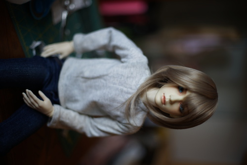
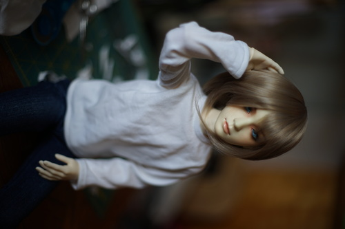
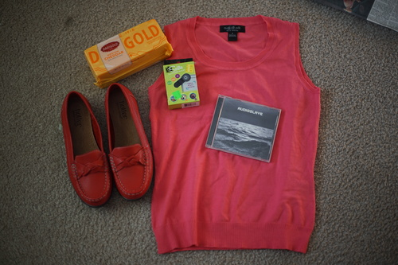

it looks like its starting to rot but the soil isnt even particularly wet!! I guess it had an okay run since it made it over a year. i still feel bad though
i was making a shirt for liam and i managed to get myself not once, not twice, but three whole times with the rotary cutter! i cant believe i did that...
the first run turned out okay. I made it out of a yellow stained cami i found in my sister's donation pile. the shirt is too short and i dumbly kept sewing the bottom hem when i saw it was bunching too much and ended up ripping out the seam over 3 whole episodes of gosick. im pretty sure i spent less time sewing than seam ripping but thats how sewing goes. I dont know if i dislike drafting or seam ripping more, but drafting hasnt been so bad lately since i started "paper and tape"
the second run was a bit better. it's made out of a sweat stained shirt too! I think its long enough now but i did get a pucker on one side of the neckline to shoulder seam. I'm still not sure about how the sleeves fit. maybe they should be closer to the body? it just doesnt look right. im also not sure about this wig. it looks kinda silly

i'm still upset about the results though because it just looks so plain. it looks fine under his nine9 jacket but gosh plain white shirt and blue jeans is just ultra boring. i think his jeans might be sd17 size. they are way too big on him and i probably wanted them to fit my DOI body too. this dude needs some undies before he flashes someone.

enjoy a background full of sewing mess! he's so cool *_* turning the wig a little bit made it look a lot better but its still silly
and a thrift store "haul" from last weekend!
I'll either wear this with nanchatte or make my keion cosplays less accurate
they had a $7.99 price sticker on them also but i got away with the lower price. Made in England. im so ready for bad nanchatte season
super dumb purchase that i'm having super fun with
i did not buy this at the thrift store
im checking out the bambicrony bonbon girls and it almost looks like theyre as skinny as their MSD-sized girls but the SD sized head just fits on them. i need more info but only like 1 person seems to own one!! im not even sure i can call them a big baby sized doll. bambicrony girls are normally very skinny anyway
and a correction on my volks lottery stats. I did enter for summer festival mariko, making my win rate 0/3. I couldnt find the email for it so i wasnt sure I actually entered but i see it now. mother sd is not a fan of me, and thats why i was so happy for an open preorder for lieselotte.
i remembered last night to keep preparing myself for being disappointed when i open hina's box. i really dislike how they painted her mouth for this run and i know i can modify it to a smile, but i am going to open that box to a blank unhappy stare. feel free to make bets on how many hours ill have her before i paint a smile line in.
i got an email about volksusa online fcs for october. this time its sdgr boy and sd16 girl so i am not even remotely tempted! some of the more mature looking girls are quite pretty but i am not a fan of the sd16 body. it's always fun to look at the example photos though. it'd be really cool if they someday included dear sd in fcs. since they do irregular options for online fcs sometimes, i suppose its possible, even if very unlikely
i made a spreadsheet of the SD fcs molds with my own comments and ratings in case i ever do find myself doing an FCS order. I havent gone through them all yet, but 58 and 68 are my least favorite! I like f-73/tiffany, she looks a bit like lorina with a closed mouth. she is available as a dear sd but her face does not fit that body at all.